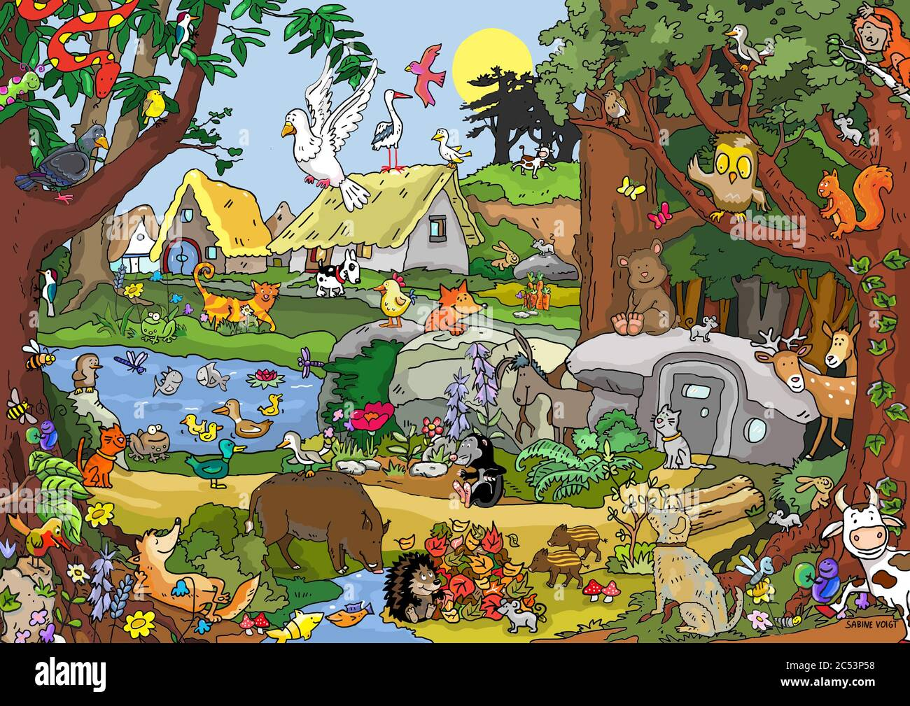

13 Wieso ein Haustier?
Niveau B1 Sprachhandlung Absicht formulieren Thema Haustiere Grammatik Finalsätze mit damit, um…zu
Haben Sie (oder hätten Sie gern) Haustiere? Notieren Sie mögliche Haustiere an der Tafel!
Hören Sie folgende Audios. Welche Haustiere haben diese Leute? Was ist das Besondere an diesen Haustieren? Sammeln Sie im Plenum (Audio 1, Audio 2, Audio 3, Audio 4, Audio 5).
Transkript Audio 1
Mein Pferd heißt Jackie, aber sie ist nicht wirklich mein eigenes Pferd. Trotzdem darf ich jeden Tag zu ihr und sie ist noch ziemlich jung, das heißt, dass wir jetzt erst anfangen, sie zu reiten, aber ich bin froh, dass ich da immer hin darf, weil ich muss nichts dafür bezahlen. Ja, und sie steht bei mir im Ort, das heißt, ich kann immer zu ihr, wann ich will, und das ist ziemlich praktisch.Transkript Audio 2
Ich habe eine Katze und ich habe sie sehr, sehr lieb. Es ist eine besonders schöne Katze. Sie hat nämlich blaue Augen und weißes Fell. Nur ihre Schnauze, die Pfoten, die Ohren und der Schwanz sind schwarz. Und diese Katze muss ich regelmäßig kämmen, damit das Fell schön glänzt und schön weich bleibt. Ihr Name ist Lady. Und ja, der passt halt auch ganz gut zu ihr, denn sie verhält sich wie eine kleine Prinzessin. Sie weiß genau, was sie will. Manchmal möchte sie spielen. Dann beißt sie mir in den Zeh oder rennt wie eine Wilde im Haus herum. Oder sie wälzt sich auf den Boden, rollt auf den Rücken und streckt die Pfoten in die Luft. Das ist ziemlich lustig. Das ist ein Zeichen auch dafür, dass sie gern gestreichelt werden will. Diese Katze ist eine sehr liebe Katze. Immer wenn Kinder kommen, mag sie mit ihnen spielen. Und wenn ich nach Hause komme, wartet sie vor der Tür wie ein kleiner Hund. Aber sie kann auch nerven. Besonders mit dem Fressen ist sie zimperlich, weil sie immer Fleisch fressen will. Und das gibt es nicht immer. Manchmal muss sie sich halt mit dem Futter aus der Dose zufrieden geben. Einmal hatte ich Hefeflocken gekauft und die Tüte auf dem Tisch liegen lassen. Etwas später war die Tüte wie von einer Maus angeknabbert und die Hefeflocken lagen verstreut drumherum. Das war natürlich keine Maus, sondern die Lady gewesen. Meine Mutter sagt, dass sie mich immer vermisst, wenn ich zur Arbeit fahre und vor meiner Zimmertür auf mich wartet.Transkript Audio 3
Was hast du für Haustiere? Ich habe drei Hunde, fünf Katzen, sechs Ziegen und 14 Hühner. Warum hast du denn Ziegen? Als ich klein war, war ich in einem Zoo und habe dort Babyziegen gesehen und dann sagte ich zu meinem Vater, ich hätte gerne Ziegen und dann haben wir zwei Ziegen aus dem Zoo adoptiert. Habt ihr denn einen großen Bauernhof, wo ihr die unterbringen könnt? Ich wohne auf dem Land, es ist sehr ländlich bei uns, daher haben wir ein großes Grundstück, haben deshalb auch Ziegen und Hühner, nutzen die aber nicht für Landwirtschaft, sondern nur zum Streicheln. Aber die Hühner legen bestimmt auch Eier, oder? Ja, die Hühner legen Eier und die Eier sind sehr lecker aus der eigenen Produktion. Und wie heißen deine Hunde? Meine Hunde heißen Benji, Spike und Amy Lotta. Und deine Katzen? Meine Katzen heißen Lucky, Momo, Digby, Tigger und Wilma. Und haben die Ziegen auch Namen? Natürlich, meine Ziegen heißen Krümel, Socke, Ella, Eselchen, Diablo und Nepomuk. Das muss doch auch Arbeit machen, oder, die Ziegen? Was muss man denn machen? Man muss die Ziegen ausmisten, d.h. man muss den Stall sauber machen, man muss den Misthaufen wegbringen, man muss sie auch jeden Morgen füttern und ihnen Heu und Wasser geben, damit sie keinen Hunger haben und natürlich muss man sie ab und zu auch streicheln. Und sind die den ganzen Tag im Stall, diese Ziegen? Die Ziegen sind im Stall, sie haben aber einen großen Auslauf mit viel Wiese und sie haben einen Kirschbaum und einen Apfelbaum, da fallen manchmal Früchte auf den Boden, die sie essen können und sie haben sehr viel Platz. Machen die auch manchmal Dummheiten? Ja, wir haben einen Hund, der sitzt dann immer vor dem Zaun und der Bock boxt mit seinen Hörnern gegen den Zaun, sodass der Zaun manchmal kaputt geht und Löcher drin sind, die man dann reparieren muss. Und sind die Ziegen auch schon mal abgehauen? Nein, Gott sei Dank noch nicht. Wir wohnen auch nah an einer Straße, da ist es gefährlich für die Ziegen und der Zaun wird regelmäßig ausgebessert, damit die Ziegen nicht ausbüxen können.Transkript Audio 4
Ich wollte als Kind schon immer eine Katze als Haustier haben, aber meine Eltern waren dagegen. Sie wollten keine Haustiere, man muss sich um sie kümmern und wenn wir in den Urlaub fahren, muss jemand auf sie aufpassen. Aber ich hatte Glück. Einen schönen Sommer hat die Nachbarskatze ganz viele kleine Babys bekommen. Eins davon hat mir sofort gefallen, eine schwarze Katze mit weißen Pfoten. Ich wollte sie unbedingt haben, doch meine Eltern waren immer noch dagegen. Als wir vom Urlaub nach Hause kamen, kam das Nachbarsmädchen zu mir rüber und meinte, heute Mittag werden die Katzen abgeholt, sie müssen ins Tierheim. Wir konnten nur eine an eine andere Familie weitergeben. Dann habe ich ganz schnell gehandelt. Ich habe einen Korb aus meiner Mama ihrem Keller geholt, bin rüber und habe die kleine schwarze Katze einfach mitgenommen, habe zu meiner Nachbarin gesagt, wir nehmen sie, das geht in Ordnung. Meine Mama hat es als allererstes entdeckt und hat ein Auge zugedrückt. Mein Vater hat es erst am Abend entdeckt. Aber die Katze hat praktisch verstanden, dass der Papa noch überzeugt werden musste. Also hat sie ihn ganz lieb angeguckt und ihre Pfote auf seinen Schenkel gelegt. Da konnte auch er nicht mehr Nein sagen. Und so ist sie bis heute bei uns. Da sie sehr klein geblieben ist und keine große Katze geworden ist, heißt sie Baby. Untertitel der Amara.org-CommunityTranskript Audio 5
Mein Mann durfte nie ein Haustier haben während seiner Kindheit, also hatte er beschlossen, sobald wir in einem Haus und nicht in einer Wohnung wohnen würden, würde er gleich einen Hund adoptieren. So, kaum hatten wir für ein Haus unterschrieben, sind wir an diesem selben Tag zum Haustierheim gegangen und wollten natürlich eine Hündin haben. Diese Hündin heißt heute Tulum. Tulum ist schon seit zehn Jahren bei uns und die ersten drei Wochen war sie die bravste Hündin überhaupt, die es auf Erden geben kann. Sie hat nie im Auto gebellt oder gejault. Sie war sehr, sehr sauber. Sie hat nie gestört. Ein Musterhund. Natürlich, nach drei Wochen fing es aber an. Ich glaube, die Hündin hat genau gemerkt, jetzt haben sie mich total gerne und die werden mich nie wieder abschieben. Ja, und dann fing es an. Tulum liebte es, meine Schuhe anzukauen und natürlich im Auto fing sie an zu jaulen vor Aufregung, wenn wir sie zum Wald spazieren fuhren. Und dann heute macht Tulum natürlich, was sie möchte. Sie legt sich auf die Betten der Kinder zum Schlafen. Sie stiehlt sehr, sehr gerne Kekse, sogar von Händen der Kinder. Ja, Tulum ist einfach die Königin des Hauses.Wieso möchten viele Leute ein Haustier haben? Vervollständigen Sie folgende Sätze mit damit oder um … zu. Sprechen Sie dann mit Ihrer Partnerin: Wieso möchten Sie ein Haustier haben?
Viele Leute möchten ein Haustier haben, um sich … zu … (nicht einsam fühlen)
Eltern kaufen eine/n … , damit … (Kinder haben einen Spielkameraden)
Manche Leute schaffen sich eine/n … an, … (regelmäßig spazieren gehen)
Ältere Leute kaufen eine/n …, … (das Haus bewachen)
Junge Paare kaufen sich Haustiere, … (einen Ersatz für Kinder haben)
Manche Ärzte empfehlen ein/n …, … (Stress abbauen)
Alleinstehende haben gern …, … (jemanden zum Reden haben)
Singles schaffen sich eine/n … an, … (neue Kontakte knüpfen)
Pause
Bilden Sie 3er-Gruppen. Einer beschreibt ein Tier auf dem folgenden Bild. Die andere raten, welches Tier gemeint ist.

Das Tier hat lange Ohren / dichtes Fell / große Augen / …
Das Tier lebt im Baum / unter der Erde / auf der Wiese / …
Viele Leute haben dieses Tier, damit …
Dieses Tier ist nützlich, um … zu …
Spielen Sie in der Gruppe Montagsmaler mit ihren Lieblingstieren. Vergleichen Sie das Ergebnis und tauschen Sie sich aus. Diskutieren Sie in der Gruppe und beantworten Sie gemeinsam folgende Fragen für jedes Tier:
- Wie heißt dieses Tier?
- Was kann dieses Tier?
- Was frisst dieses Tier?
- Wo lebt dieses Tier?
- Welchen Nutzen hat dieses Tier?
- Wieso wollen Sie dieses Tier?
Ich möchte eine/n …, um … zu …
So ein/e ist nützlich, um …
Wählen Sie das schönste Tier aus Ihrer Gruppe aus und stellen Sie es im Plenum vor.